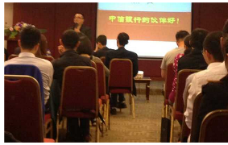

五星人格营销突破训练
很多时候销售不能促成不单单是不了解客户的需求，不能直指客户内心，更关键的是销售员自身原因导致不能成交！很多销售员今天心情好，就热情服务，甚至不管对方接受不接受，一股脑的灌输产品、服务；有些销售员今天心情不好，随意应付了事，爱买不买的态度也会刺激到客户；甚至有些销售员内心会把客户划分为：能成交的、不能成交的、成交量大小等而视情况提供自己的服务。有些销售员甚至都不知道自己到底适合不适合当销售员，只是听说做销售工资高，赚钱快，就去当了销售员……情况太多了，而本课程徐锦元先生将会帮助学员了解自己、了解他人的人格模式，分析自己是否适合、热爱这份事业后从新定义自己不能让情绪影响了销售业绩，同时针对不同的客户会有不同的产品需求不同的消费习惯等，徐锦元先生将带领学员用适合自己的方式直指消费者内心，帮助学员掌握消费心理，感动消费者，成功收获劳动果实。
导 读
你是否常处于无法完成销售业绩的压力下？
你是否总是无法准确读懂客户到底想要什么？
你是否不知道该如何与客户进行有效的沟通，快速良好的关系？
你是否在销售即将完成时，依然还面对着客户反悔的威胁与可能？
你是否常面临着客户总是告诉你会再考虑考虑，却不对你做出任何承诺？
面对日益激烈的销售竞争，你是否知道该如何打破销售瓶颈吗？
……
销售既要“读心”又要“攻心”！
“五星人格”是徐锦元先生结合自己近二十年的销售、管理实践经验，根植中国文化为基础，整合西方的人格心理学和行为学理论，通过统计学对近五万人的人格模式进行分析，并归纳整合古今中外各种心理学理论后，形成的一套以当今社会现实为基础的实用、简单、易操作的创新人格分析系统。
《五星人格销售突破训练》首先传授如何运用“五星人格”理论系统，觉察自身的五星人格模式，认识自己人格模式的优点与盲点。其次传授如何运用“五星人格”理论系统读懂客户的人格模式及不同人格模式客户的具体需求。最后在读懂客户的需求上，传授如何攻客户的“心”，快速达成交易，实现销售的瓶颈。
培训效果预估
1.觉察自身人格模式的优点与盲点，接纳自己，以积极的态度面对工作与生活；
2.发现自身销售瓶颈所在的根源在哪；并找到解决销售瓶颈根源的方法；
3.学会从客户销售的行为模式中，分析客户的人格模式，精准解读不同人格模式客户的具体需求；
4.学会针对不同人格模式客户如何快递达成交易的技巧，突破销售瓶颈。
选择我们的理由
1.专业的理论基础构成；
2.精确的测评结果呈现；
3.庞大的受试群体测试；
4.简单易用的测评工具；
5.应用面积极广泛使用；
五星人格简介
五星人格
(Outstanding Five Star Personality)，是一种人格分类方式。以统计学及心理学作为基础，通过人的行为导向以及行动步调将人格区分为四种基本的行为模式。以此为基础探讨人格模式与行为的关系，并进一步深入到管理、销售、沟通、谈判等具体应用中去。
五星人格适合所有人群与年龄，五星人格不会随种族、法规、文化或经济地位而改变，它只代表着一种可观察的人类行为与情绪。
五星人格基本概念
五星：金星、木星、水星、火星、土星
人格：人格是个体由遗传和环境所决定的实际的和潜在的行为模式的总和。
金星：领导者，坚强果敢，直接行动派；
木星：思考者，技术与艺术气质并存；
水星：支持者，温柔内敛，和平主义者；
火星：社交者，热情友善，天生乐天派；
土星：整合者，兼济金木水火星特质。
部分授课见证
1.课程名称：《现代市场营销与服务》
授课时间：2012-08-05
授课地点：福建省南平
授课领域：市场营销——品牌
客户名称：武夷山市——工商联
客户所属行业：政府
内容介绍：新闻报导网址：
http://ent.chinadaily.com.cn/mxoumei/2012-08-13/content_6711985.html
本报讯 8月5日，由武夷山市工商联主办的“大武夷企业发展高峰论坛――当前经济环境
下的市场营销战略”在武夷学院宋明理学研究中心举行。南平市工商联副主席、武夷星茶叶
有限公司董事长何一心等参加了本次论坛。
会议邀请江苏波司登集团公司策略顾问、北京工商大学徐锦元教授作精彩演讲。他从
“2012经济形势及展望” “市场营销的发展历史” “当今市场营销的变革”三方面内容入
手，结合当前企业普遍存在问题作了深入浅出的讲解。
2、课程名称：《现代市场营销与服务》
授课时间：2013年
授课地点：福建省南平
授课领域：市场营销
客户名称： 企业中层管理者
客户所属行业：通讯
内容介绍： 徐老师根据自己将近20年的销售管理经验，结合自己与时俱进把握市场的变化，
以及个人对市场具有远见独特的眼光，带来了一门实用性高、时代感强的现代营销课程。
3、课程名称：《时尚耀中国2010羽绒服市场展望与营销策略》
授课时间：2009-06-28
授课地点：江苏常熟市
授课领域：市场营销——品牌
客户名称：波司登集团——冰洁品牌
内容介绍：江苏常熟市举行《时尚耀中国》冰洁2009新品订货会暨羽绒服营销策略研讨会，
会议邀请江苏波司登集团公司策略顾问—徐锦元先生，在会上徐锦元先生为“冰洁”全国
近600经销商做营销分析及授课《时尚耀中国2010羽绒服市场展望与营销策略》。
4、课程名称：《大客户的精准营销》
授课时间：2014-11-3-4
授课地点：福州长乐
授课领域：市场营销——销售技巧
客户名称：福建凯邦锦纶科技有限公司
内容介绍：《大客户的精准销售》课程传授销售人员如何从对方的肢体语言、微表情和五星人格行为模式特征分析客户的性格、客户心理，制定精准销售方略，并如何步步到位成交从而做到精准营销，突破销售瓶颈,提升业绩。
5. 《福建新大陆集团全国销售经理培训班》
授课时间：2013-02-20
授课地点：福州
课程所属领域：销售——销售管理
客户名称：新大陆集团全国销售经理
客户所属行业：科技公司
内容介绍：
内容分为两部分：一是通过测评、评估、发现了解自己的五星人格模式，了解自我人格模式的优点与缺点，突破心理障碍；学会主动且成功展示自己，以及接触更多中高层客户的技巧和销售沟通技巧与应对，特别是谈判的沟通技巧与掌握解决问题的方法；第二部分是掌握基本合同辨识、招投标流程与招标技巧；
6.课程名称： 《广东省移动客户服务（深圳）中心综合管理能力素质提升培训》
授课时间：2013-12-09-12-10
授课地点：深圳
课程所属领域：通用管理——中层管理
客户名称：移动客户服务中心 中层管理者
客户所属行业：通信
内容介绍：
首先清晰地了解沟通在个人综合管理能力素质的重要性以及在工作中为什么会存在沟通障碍；接着传授从根源上解决沟通存在的问题即通过认识自己的人格模式，觉察自己的沟通人格模式，清楚地认识自己沟通方式存在的优点与盲点。从而因时因地因人调整自己的沟通方式。
其次在了解自己沟通模式的基础上，传授如何识别他人的沟通人格模式具体技巧。最后在学员互动和角色扮演分析中，如何用自己的沟通人格模式与他人的沟通人格模式建立良好的人际关系，从而整体上提升自身的综合能力素质提升。
7. 《泰康人寿福建分公司卓越主管培训班》
授课时间：2013-10-03
授课地点：福州
课程所属领域：通用管理——中层管理
客户名称：中层管理者
客户所属行业：银行保险
内容介绍：
首先运用“五星人格”理论系统认识自己，了解自己人格模式的优点与盲点！在认识自身优点与盲点的基础上，觉察自己，接纳自己！在接纳自己的基础上，解析自己的管理人格模式，清晰了解自己管理人格模式的优点与盲点，分析自己团队中可能存在的管理问题，并找到解决问题的方法。
接着传授以管理者的身份，如何觉察下属的人格模式，并清楚地掌握下属人格模式的优点与盲点后，合理地安排合适的岗位。以及传授如何针对不同人格模式的下属如何进行指导与激励！
8. 《五星人格生命人寿黑龙江分公司高层管理培训》
授课时间：2013-11-2-4
授课地点：哈尔滨
课程所属领域：管理销售
客户名称：生命人寿黑龙江分公司高层
客户所属行业：保险行业培训
内容介绍：
运用“五星人格”认识自己，了解自己，因为只有认识自己了，才能悦纳自己、欣赏自己。只有悦纳自己、欣赏自己才能更好地投入生活与工作中！课程分为两部分，首先针对本企业本行业最需要的销售技巧的传授。徐锦元先生传授最具实用性的如何运用人格模式来有效营销以及更细微地如何通过声音、肢体语言以及行为模式来辨别客户的人格模式。在辨别人格模式的基础上，再授予不同人格模式的营销要点与技巧，从而达到快速达成交易。其次再讲授管理知识。管理不要管人，要管心。更是个性化地互动分析不同的人格模式可能存在的管理问题，并讲解有效解决方法。另外再详细阐述不同人格模式的下属的真正需求与动机，再针对性进行如何提高稳定度与效率。凝聚团队的力量的同时提升业绩！ 